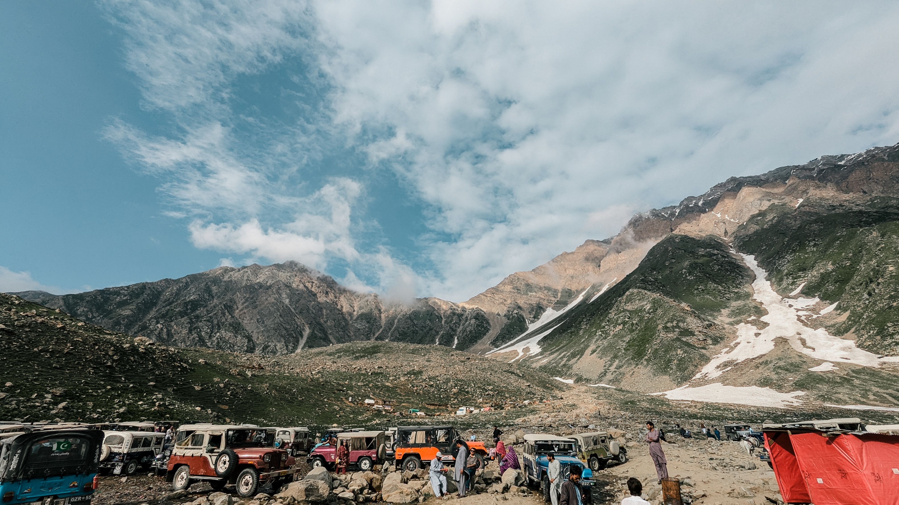

Pakistan is home to a wide variety of destinations, from majestic mountain valleys and peaceful lakes to historic forts and scenic hill stations. Each destination offers its own unique landscapes, culture, and experiences.

Hunza Valley is located in the Gilgit-Baltistan region of Pakistan and is surrounded by some of the most impressive mountains in the country. The valley is known for its natural beauty, peaceful villages, historic forts, and spectacular views of the Karakoram mountain range.

Skardu is a remarkable destination in Gilgit-Baltistan known for its dramatic mountains, beautiful lakes, valleys, and unique landscapes. It provides opportunities to explore nature and experience the peaceful environment of northern Pakistan.

Swat Valley is famous for its green mountains, rivers, forests, and peaceful surroundings. The valley provides beautiful scenery and a variety of places for travelers interested in nature and outdoor exploration.

Naran Kaghan is a scenic valley famous for its mountains, rivers, lakes, and beautiful landscapes. It attracts travelers who want to experience the natural beauty of northern Pakistan.

Murree is a popular hill station surrounded by green mountains and pine forests. Its cool climate, scenic viewpoints, and peaceful surroundings make it a popular destination for visitors throughout the year.